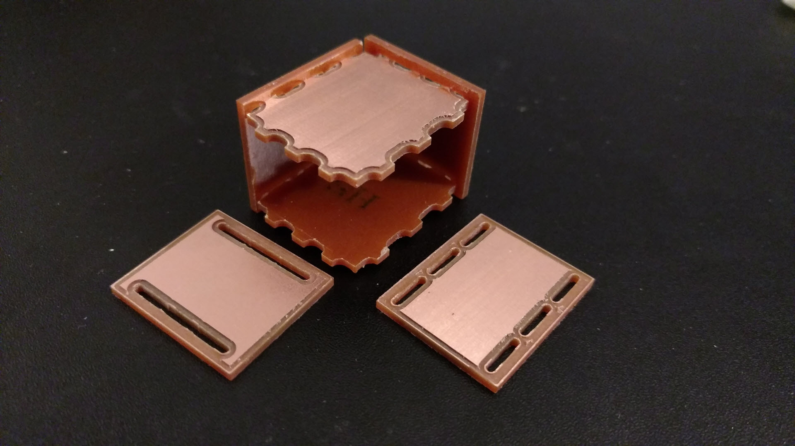
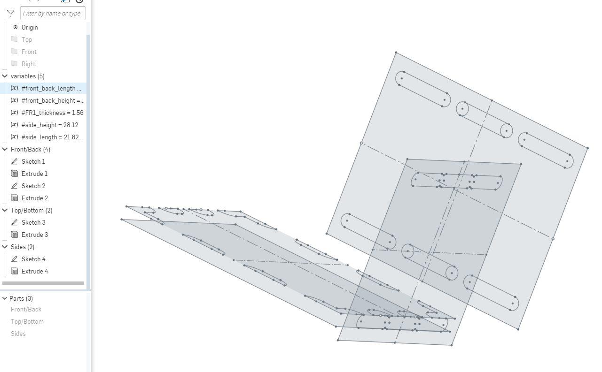
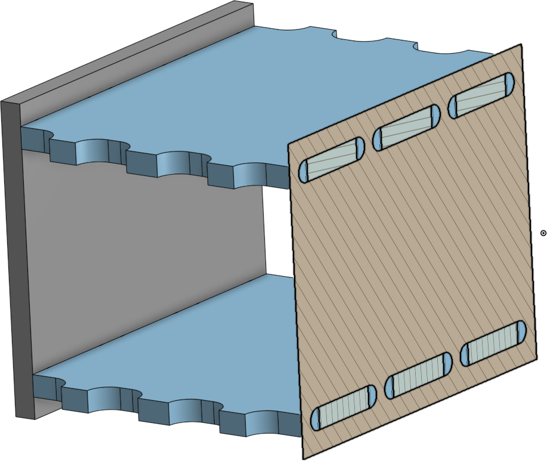
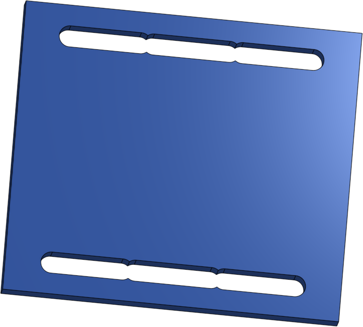
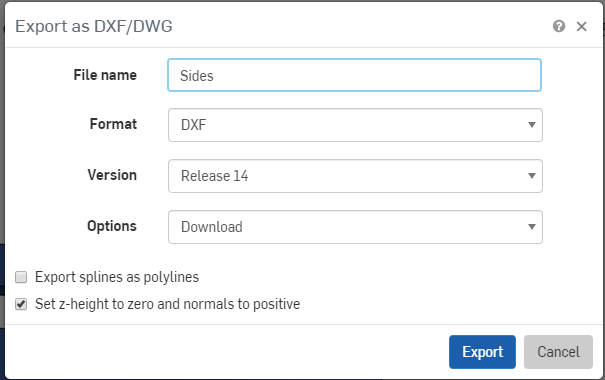
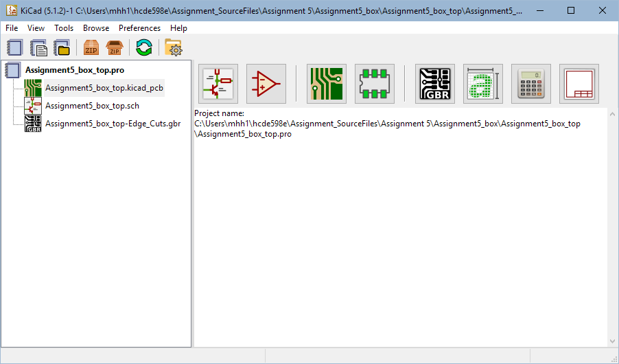
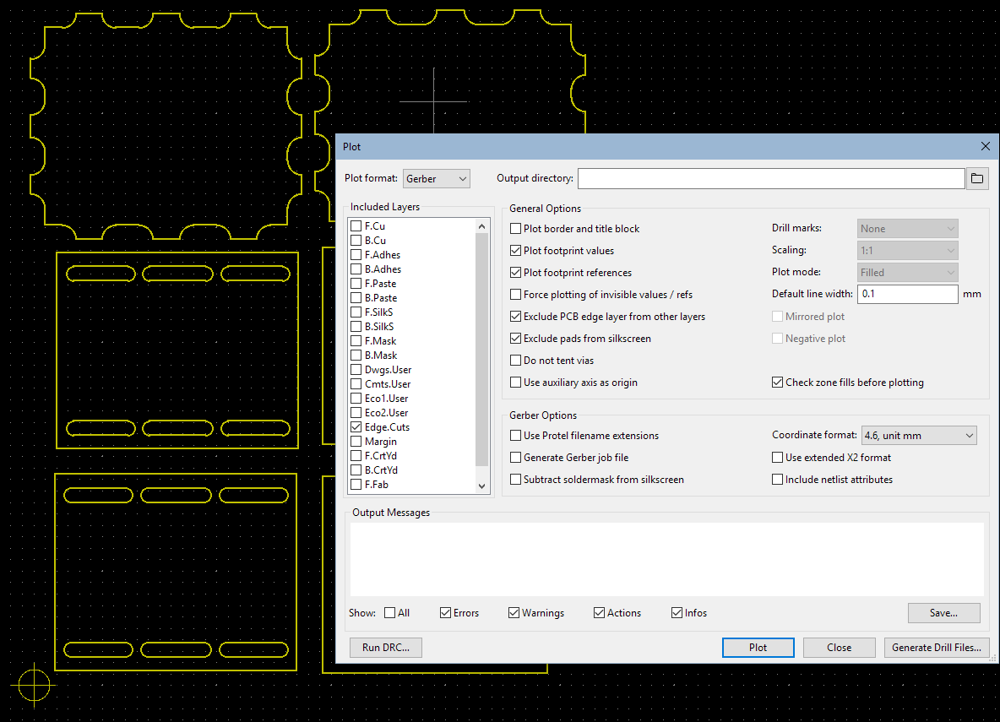
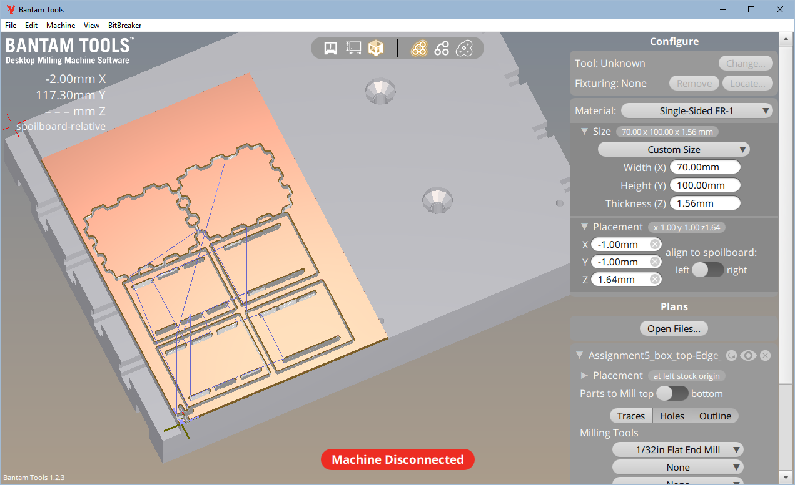
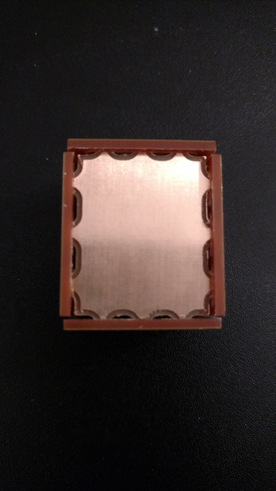
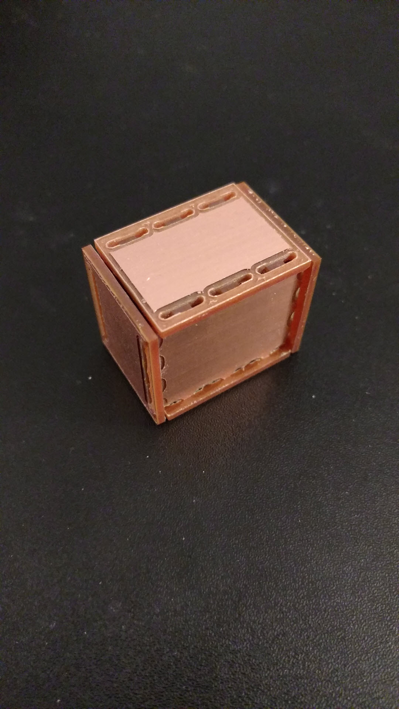

For this assignment, we were asked to design, fabricate, and assemble a FR1-made container of some kind using subtractive fabrication via CNC milling. The part geometries were constructed in Onshape (and assembled to confirm fit) before exporting the part faces as .DWFs to KiCAD to generate Gerber code for use in Bantam Tools/Othermill. All Onscape source parts are saved to the cloud and available for public viewing in my Onshape document. Additional source files for CNC processing can be found within my github repository.
The general steps that I took in this assignment were:After viewing and working with the assembly of parts that Joshua demoed in class, I wanted to think of a unique joining method for the parts making up the container. To keep things simple, I decided that one face would have tabs to fit into slots on the other two faces. I again chose a bottoms up design process to use the parameters from one part in the design of the next.
I first created the front/back of the box, which would have the tabs. I decided to set the length/width of the part such that I could fit as many as possible on a single FR1 board, in case there were issues with my fabrication, requiring me to use additional boards. This was also beneficial because I measured the FR1 boards to determine the necessary extrude depth, only to learn not all the boards were the same thickness. Therefore, fabricating all of the parts from the same board would keep the thickness consistent. The FR1 board I ended up using had a thickness of 1.5mm. After extruding, I designed the tabs, which would have to rounded (I guess I could have accomplished using this fillets instead of circles as was done in the Onshape file, which would not have required me to perform trimming on circle/arc elements...) to account for the round head of the end mill being unable to cut rectangular corners. Additionally, slots needed to be have a depth of the FR1 thickness for the pieces to sit flush when assembling. Luckily, this depth of 1.56mm was greater than the diameter of the 1/32" flat end mill. If the diameter was not greater, then I would either need to use a different end mill, or design a different type of joint that could accommodate the end mill. After creating the front/back, I made the top/bottom, creating slots that matched the dimensions of the front/back, but with additional room for the end mill again. I tested the fit by fastening the tabs into the slots in the assembly.
Once I had confirmed that these two parts fit together, I created the sides in a similar manner. Due to the chosen dimensions for the previous sections, the slots merged into one larger slot, with some small indents. I was interested in learning how this might behave, so I left it. I exported the faces of the created part geometries as DXFs using Release 14 as the Version.
I opened KiCAD, created a new Project (saving a new folder to house the Project), and opened the KiCAD pcb diagram. I imported 2x the .DWFs that I had created earlier and placed them onto the diagram/board. I then placed the origin in the bottom left corner, near the bottom leftmost drawing. I did some measuring just to ensure that the part geometries matched the dimensions that I had set earlier in Onshape and that the gaps I had left between the parts could be milled without any problems with the same end mill. I then plotted the pcb as a Gerber file, using default settings but only including the Edge.Cuts layer.
I opened the Bantam Tools software and loaded the .gbr file that had been produced. Bantam Tools prompted me to select how the file was applied and I selected it for the Outline in addition to the top. The preview of my parts was loaded into the software and I configured the material/locations and end mill for how I wanted to mill. Importantly, I removed "Trace" from the milling tools and remeasured the thickness of my FR1 board after taping it to another board to avoid damaging the loading bed. After all these were set, I connected my laptop to the Othermill, checked that the end mill that I wanted to use was in the machine (if it was not, I would've used the tools on top of the machines to remove/replace it), set the end-mill back to the origin and then loaded my FR1 sandwich onto the bed using double-sided tape. I left the sandwich hanging off the bottom left of the bed slightly so that I could pull it off the bed when milling was complete. I then started the mill, which ran super smoothly and completed in less than an hour. Nice!
After the milling finished (which surprised me, because the status in Bantam Tools suggested there would be another 20 minutes?), I set Othermill back to the loading position and removed my FR1 sandwich with a little bit of force. I then turned off the machine. I began prying my pieces off of my sandwich, since the tape was still holding strong. As I began to assemble, I thought I had not measured correctly, because the slot widths were measuring to be 1.46mm, rather than the 1.56mm that I had set in Onshape. However, I saw that there was a small lining of copper at the lip of any cut made by the end mill, which was not removed. I flicked most of these off, as the thin layer did not adhere well to the remaining pcb, with the copper around it removed and was able to assemble without much difficulty. The pieces still don't fit flushly (because of the same issue where the copper on the tabs is not cut deep enough, but is much more difficult to remove since it has not been separated from the rest of the copper).
